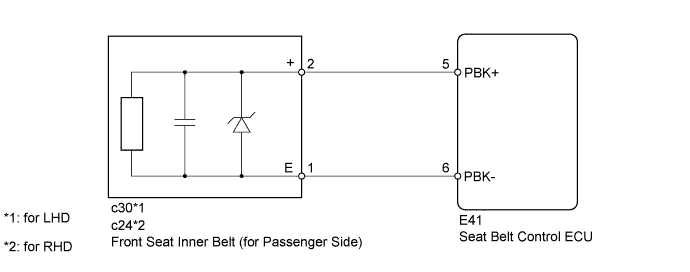
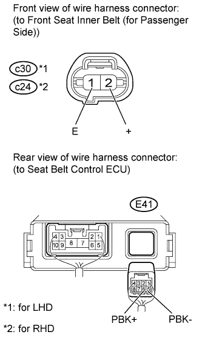
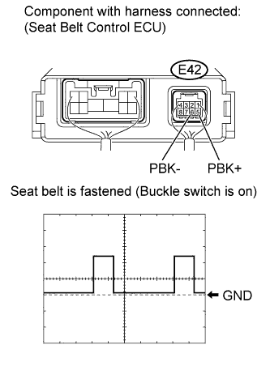

DTC B2075 Passenger Side Seat Belt Buckle Switch Circuit Malfunction |
| DTC Code | DTC Detection Condition | Trouble Area |
| B2075 | Malfunction in the front seat inner belt (buckle switch) circuit. |
|

| 1.CHECK HARNESS AND CONNECTOR (FRONT SEAT INNER BELT - SEAT BELT CONTROL ECU) |
 |
Disconnect the c30*1 or c24*2 front seat inner belt connector.
Disconnect the E41 seat belt control ECU connector.
Measure the resistance according to the value(s) in the table below.
| Tester Connection | Condition | Specified Condition |
| c30-2 (+) - E41-5 (PBK+) | Always | Below 1 Ω |
| c30-1 (E) - E41-6 (PBK-) | ||
| c30-2 (+) or E41-5 (PBK+) - Body ground | 1 MΩ higher | |
| c30-1 (E) or E41-6 (PBK-) - Body ground |
| Tester Connection | Condition | Specified Condition |
| c24-2 (+) - E41-5 (PBK+) | Always | Below 1 Ω |
| c24-1 (E) - E41-6 (PBK-) | ||
| c24-2 (+) or E41-5 (PBK+) - Body ground | 1 MΩ higher | |
| c24-1 (E) or E41-6 (PBK-) - Body ground |
|
| ||||
| OK | |
| 2.CHECK SEAT BELT CONTROL ECU |
 |
Reconnect the E41 seat belt control ECU connector.
Disconnect the c30*1 or c24*2 front seat inner belt connector.
Use an oscilloscope to check the waveform of the seat belt control ECU between the connector terminals.
| Tester Connection | E41-5 (PBK+) - E41-6 (PBK-) |
| Tool Setting | 5 V/DIV., 20 ms./DIV. |
| Switch Condition | Engine switch (IG) Front passenger side seat belt unfastened (Buckle switch off) |
| Engine switch (IG) Front passenger side seat belt fastened (Buckle switch on) |
| Result | Proceed to |
| OK (for LHD) | A |
| OK (for RHD) | B |
| NG (for LHD) | C |
| NG (for RHD) | D |
|
| ||||
|
| ||||
|
| ||||
| A | ||
| ||